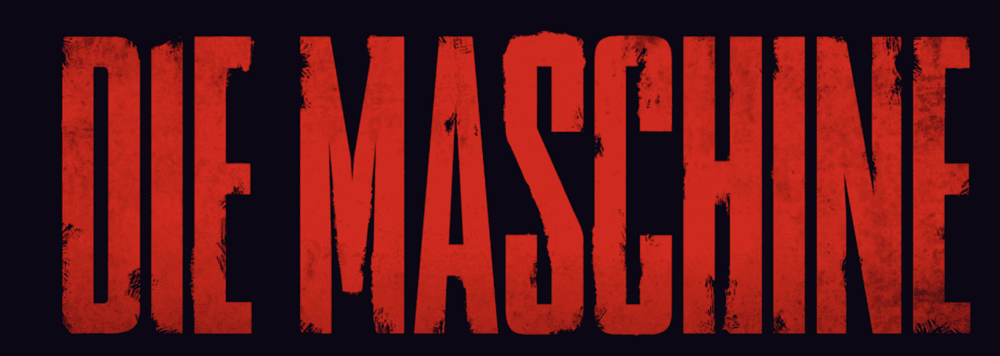
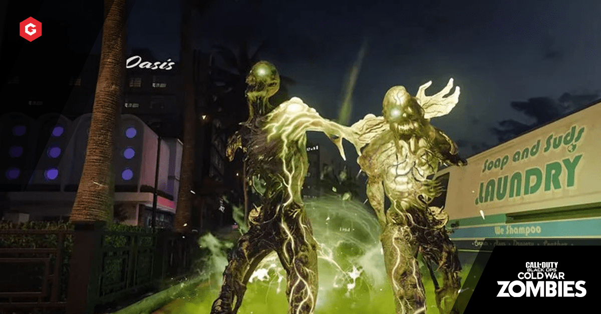

The secret heart of Treyarch’s Call of Duty games since 2008 has always been Zombies. The wave-based survival mode is equal parts silly, challenging, and endlessly repeatable. But in the 12 years since it was first released, Treyarch has added way too much to the mode. 2018’s Black Ops 4 was so complicated that the features distracted from the fun. I spent more time watching YouTube videos trying to figure out the maps than I did running around the game itself.

Course Correction
Black Ops Cold War doesn’t reinvent the Zombie-mode wheel. It keeps most of the basic ideas that Treyarch has added to the mode over the last 12 years, but simplifies them down to their most fun elements.
The best example of this comes from Black Ops Cold War’s map, which takes the original Nazi research lab from the first World at War Zombie map and expands it into a modern, much larger, Zombies experience. This map, called Die Maschine, still has plenty of hidden secrets, but it leads players to things like the power switch, which you need to turn on to buy perks, and the Pack-a-Punch machine, using simple objective markers rather than keeping them hidden. This makes the map feel more focused than Zombies maps of the recent past. Everything I do in the map now feels like it’s in service of my survival.
More importantly, killing zombies in Die Maschine is a tremendous amount of fun. The environment is split between an upper level, which is a snowy landscape complete with rocks and debris that make it perfect for dodging zombies, and a lower-level laboratory, full of tight hallways that are easy to get ambushed in. While previous maps made the zombies feel like an afterthought to the Easter eggs, one of my favorite parts of Die Maschine was just kiting hundreds of zombies around the map like the Pied Piper, but with a laser gun instead of a flute.
Rather than the microtransaction-fueled upgrades of Black Ops 4, Black Ops Cold War’s upgrades are earned by surviving waves. When you’re actively upgrading, the rewards feel direct and important. Upgrading a perk like Juggernog can give you more health, while upgrading ammo mods — which give weapons elemental effects — can increase your damage or stun zombies when they get shot. For every new upgrade I bought, I could actively see myself lasting more and more rounds.

Necessary Upgrades
Zombies now has a weapon rarity system that should look pretty familiar to anyone who’s played an MMO or RPG. Weapons come in tiers of rarity from Common, to Uncommon, Rare, Epic, and Legendary. Each rarity upgrade does more damage and comes with a random selection of attachments. The mode’s signature mystery box — which spits out random weapons — can give you weapons of any rarity, and it’s more likely to give you higher tiers later in the game.
Black Ops Cold War also lets you bring in weapons from your custom multiplayer loadouts for the first time. These custom-fitted guns, complete with your favorite attachments, start at a low power level but can be upgraded in each match. That means you can just use your personal weapons and keep upgrading them rather than using the guns you might find on the map. Even better, everything in Zombies is now connected to Call of Duty’s other modes. That means the experience you gain in Zombies carries over to your multiplayer rank.
This new weapon rarity system adds a strong sense of progression to Zombies. Rather than dealing with the binary of good guns and bad guns, there are now shades of gray between each gun. In one match I got a semi-automatic rifle, and while I might have passed it by in previous games, its Legendary rarity convinced me to send it through the Pack-a-Punch machine and I ended up using it for dozens of rounds. It saved me dozens of times and let me cut through early-round zombies way better than I could have with a Common assault rifle. It also got me to try a different weapon than I normally would in the mode.
On their own, all of these things would have been significant improvements over the Zombies modes from the recent past. But when added together, they feel like a massive leap forward for the whole mode. By streamlining the overly complicated mechanics this time around, Treyarch is placing the focus back on the mode’s bread and butter: killing zombies.